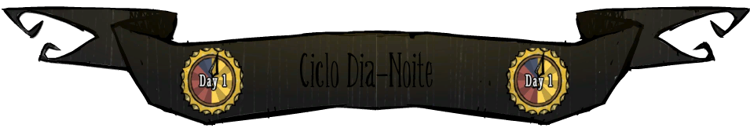
Os dias são representados por um relógio no canto superior direito, cada dia no jogo dura 8 minutos reais. É possível observar que no relógio há 16 segmentos destacados,cada segmento representa 30 segundos reais. Após os 8 minutos,a contagem de dia ira aumentar. O dia é divido em 3 fases: dia,tarde e noite. Certos comportamentos de mobs são alterados de acordo com a fase do dia.
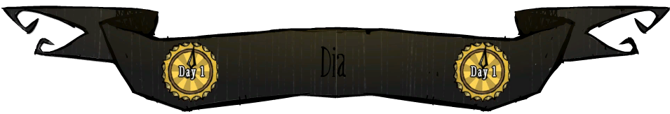
A fase mais clara,representada pelos segmentos amarelos do relógio. É considerada a fase do dia mais agradável e segura,a maioria dos mobs passivos e neutros seguem a sua rotina ativa de vasculhar pelo mundo por exemplo: borboletas(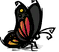) acordam de suas flores(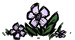) e começam a voar procurando por outras flores(), abelhas(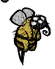) começam o processo de polinar, homens-porcos(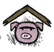) saem de suas casas a procura de qualquer comida no chão e etc.
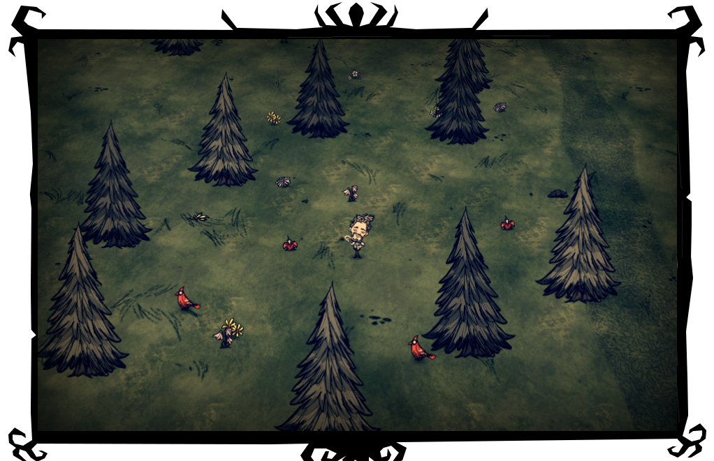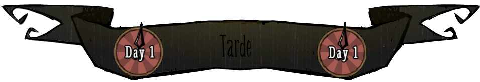
O dia começa a se escurecer mas ainda é claro suficiente para enxergar,representado pelos segmentos alaranjados do relógio.A maioria dos mobs passivos e neutros voltam para o seu abrigo natural mais próximo e geralmente se tornam indisponíveis para interação. Animais vespertinos começam a sair de seus abrigos como : toupeiras(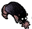) e aranhas(). Embora ainda esteja um pouco claro,os personagens começam a lentamente perder um pouco de 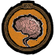.
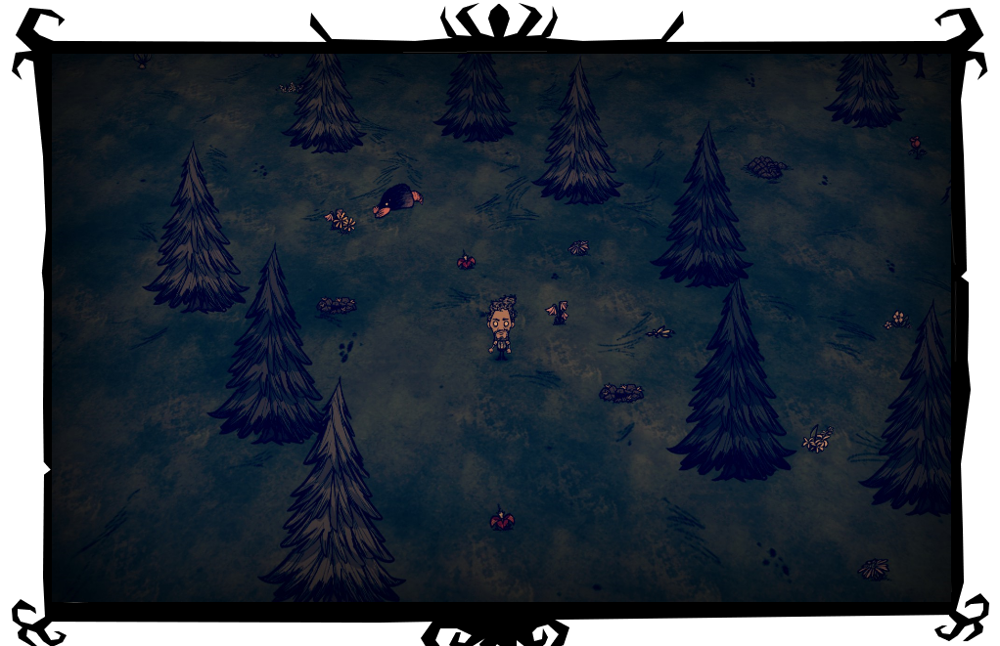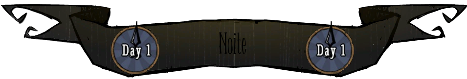
A escuridão cai por completo,tornando-se impossível de enxergar sem uma fonte de luz,é representado pelos segmentos azuis do relógio. Enquanto na ausência de luz, jogadores perderam drasticamente sua e se não conseguirem qualquer fonte de luz() dentro de 5 segundos o monstro da escuridão (Charlie) ira atacar o jogador,causando dano massivo de 100 de e 50 de . Animais vespertinos continuarão com o seu comportamento de vasculhar e animais matutinos, caso fora de um abrigo, irão dormir.
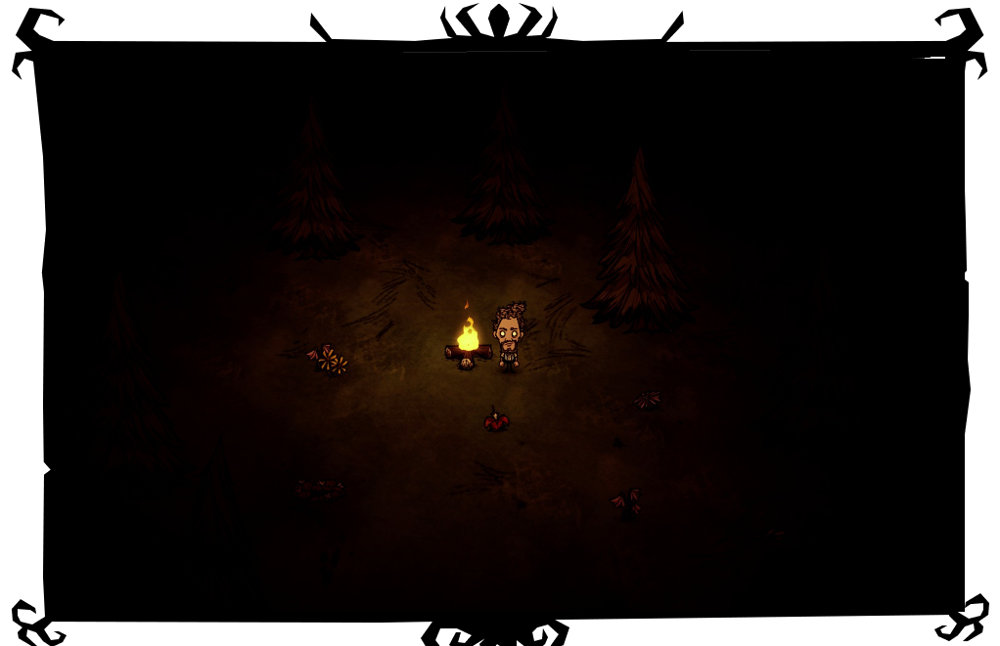